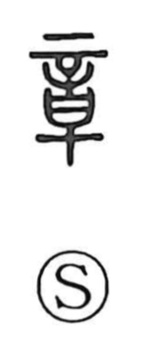

章

Uncategorized
Kun: | On: sho
chapter ・ stanza ・ pattern ・ emblem ・ rule
Explanation
In the earliest script forms, 章 is a pictograph: the upper part shows the tattooing needle (辛), while the lower element depicts the pooled, saturated ink (日). From this image it conveyed the vivid, conspicuous beauty of ornamented skin—an idea echoed in 彰, and paired with 文, the figure of patterned body design, which together gave rise to 文章 as “beautifully patterned design.” Because tattoos in ancient society also served for rites of passage and to indicate social rank, the character broadened to mean a model, a rule, and a distinguishing emblem or sign. By extension, it came to mark the divisions of poetry and music, and ultimately the modern sense of a “chapter.”